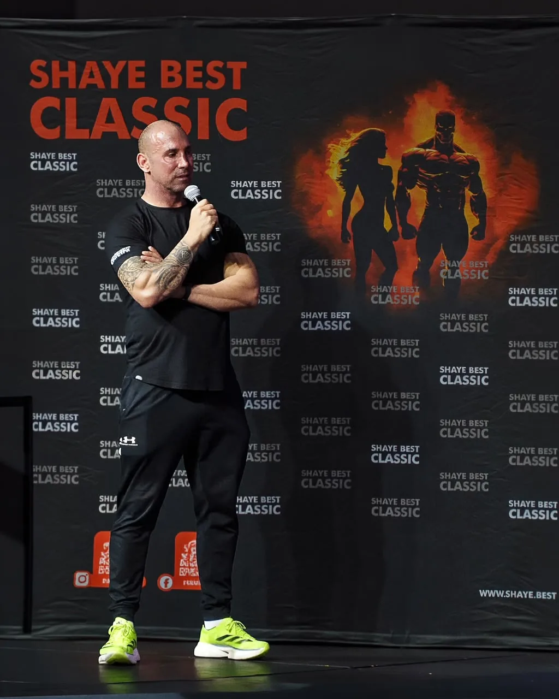

Shaye Best
His story
International Bodybuilding & Fitness Judge · Founder of the Shaye Best Classic · Independent Promoter
With over a decade of experience as a champion athlete, international judge, and independent event promoter, I have dedicated my career to evaluating, elevating, and championing top-tier physique athletes across the globe.
My foundation in the fitness industry was built on stage as a competitive athlete, securing back-to-back podium finishes at Mr. Fitness South Africa (including 1st place in the Men's 35+ Division) and competing as a sponsored athlete. Transitioning from competitor to official, I qualified as a bodybuilding judge in 2015 and rapidly built an elite global resume.
To date, I have served as an official panelist at 8 World and Universe Championships across five international destinations (Italy, Thailand, the United Kingdom, Indonesia, and Mexico), evaluating competitors for major global bodies including UWSFF, I.C.S, UIBFF, WFF, and NABBA.
Having previously held high-level leadership and governance roles across major federations (including serving as UIBFF President and Worldwide Pro Director, WFF Pro Director South Africa and WFF Western Cape Chairman, and IFBB Development Officer), I chose to break free from traditional federation constraints to stand truly independent. Unaffiliated and driven purely by athlete-first values, I founded the Shaye Best Classic. Built as an open, cash-prize championship where any athlete can compete regardless of affiliation, it has officially cemented its status as the #1 bodybuilding and fitness event in South Africa for both 2025 and 2026.
Beyond the competition stage, I am a gym owner (Look Better Naked Fitness Studio), certified life coach, sports psychologist, personal trainer, and motivational speaker who has addressed corporate audiences including South African Airways (SAA). Whether judging world championships overseas, promoting South Africa's premier independent show, or coaching athletes to success, my mandate remains singular: driving excellence, absolute integrity, and freedom in physique sports.
Key credentials & global footprint
- Founder & Host, Shaye Best Classic: creator and promoter of the #1 bodybuilding event in South Africa (2025 & 2026), the country's leading independent, cash-prize championship.
- Global judging footprint: panelist at 8 World & Universe Championships across 5 countries:
- Italy: UWSFF World Champs 2026, I.C.S Universe 2025, I.C.S World Champs 2024
- Thailand: UWSFF World Champs 2025, WFF Universe 2022
- United Kingdom: UIBFF Universe Champs 2023
- Indonesia: WFF World Champs 2022
- Mexico: WFF Universe 2019
- Former federation governance
- UIBFF: President & Worldwide Pro Director
- WFF: Pro Director South Africa & Western Cape Chairman
- IFBB: Development Officer, Team Manager, and Official
- Champion competitor: 1st place, Mr. Fitness South Africa (Men's 35+ Division) & sponsored athlete.
- Coach & fitness business owner: founder of Look Better Naked Fitness Studio; certified personal trainer, sports psychologist, and life coach.
- Keynote speaker: guest motivational speaker for South African Airways (SAA).